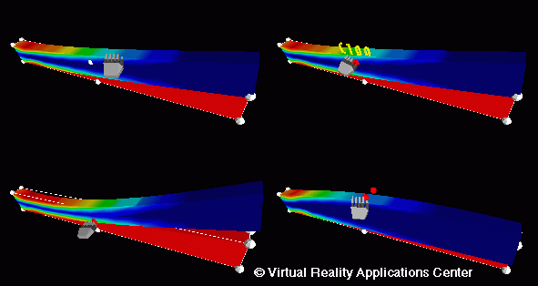

Combining Finite Element Results, Design Sensitivities
and Virtual Reality (Three-dimensional example)
Here the same cantilever beam is modeled in three dimensions. Now the
designer has the ability to modify the three-dimensional shape and view
the effect of the shape changes on the vonMises stresses (A, B, C, D).
The hand model shown represents the movement of the Pinch Gloves in the
virtual environment.
Two-Dimensional Example
Return to Introduction...